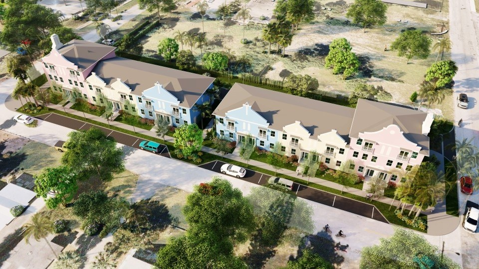
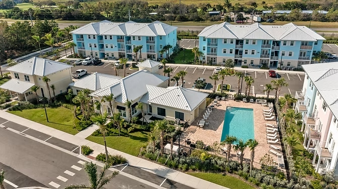

#1531993
WPB HQ
FL Offices
Hours
#1531993
· Tampa
What window wall is
Window wall is a non-load-bearing exterior glazing system installed between slabs - the bottom of each story’s window wall rests on (or anchors to) the slab below, and the top tucks under the slab above. Window wall is stacked floor by floor.
This is different from curtainwall, which hangs outside the slab edges as one continuous skin. Window wall is more economical, sequences naturally with concrete construction, but typically caps out at ~10 stories.
Common applications:
- Multifamily - podium and stick-built up to 8 stories
- Mid-rise condo
- Select-service hotels (4-10 stories)
- Mixed-use ground-floor retail + upper-floor residential
- Senior living and assisted-living
Systems we install
| System | Manufacturer | Design Pressure | NOA | Use |
|---|---|---|---|---|
| ES7000 (LMI) | ESWindows | +125 / −150 PSF | 23-0724.09 | HVHZ multifamily, condo |
| ES7100 (SMI) | ESWindows | +125 / −150 PSF | 23-0724.10 | Non-HVHZ multifamily |
| ESWindows ES-CS1325 | ESWindows | Per NOA | Multiple | Mid-rise commercial |
Source: ESWindows technical datasheets and Miami-Dade Product Control NOA database.
Window wall vs curtainwall - when window wall wins
Use window wall when:
- Multifamily, condo, or mid-rise hotel up to ~10 stories
- Construction sequence is slab-then-glaze-then-slab
- Visible horizontal slab bands are acceptable aesthetically
Use curtainwall when assembly is Class A office, hotel tower, or requires flush SSG aesthetic. Full decision framework.
Selected window wall projects
Three completed Florida multifamily and condo projects using the window wall systems described above.



Frequently asked questions
Can window wall be impact-rated for HVHZ?
Yes. ESWindows ES7000 holds a Miami-Dade NOA (23-0724.09) with design pressures to +125/−150 PSF.
What’s the height limit on window wall?
~10 stories is the practical limit. Above that, wind load and anchor capacity push you to curtainwall.
How is window wall waterproofed?
Sloped slab edge with back-dam, self-adhering flashing turn-down, and a sealed perimeter at head and jamb. AAMA 502 field water testing typically required on HVHZ.
Related ACG resources
Have a project?
Send drawings to ACG. We’ll review system selection, code path, and budget - no charge. Florida CGC #1531993.